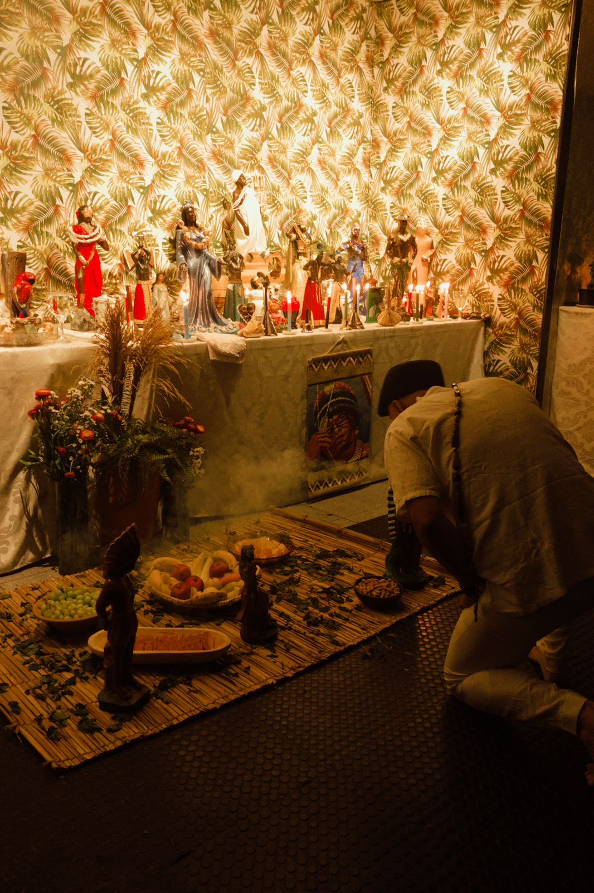
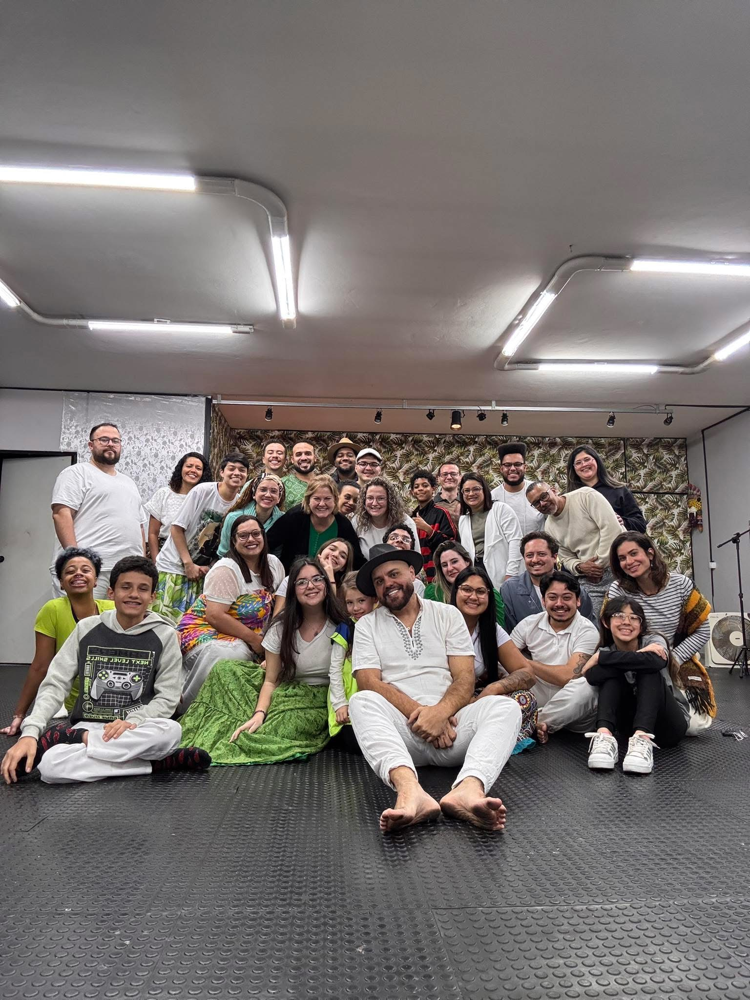
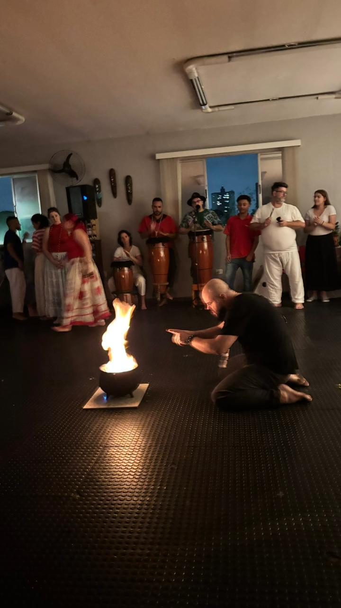
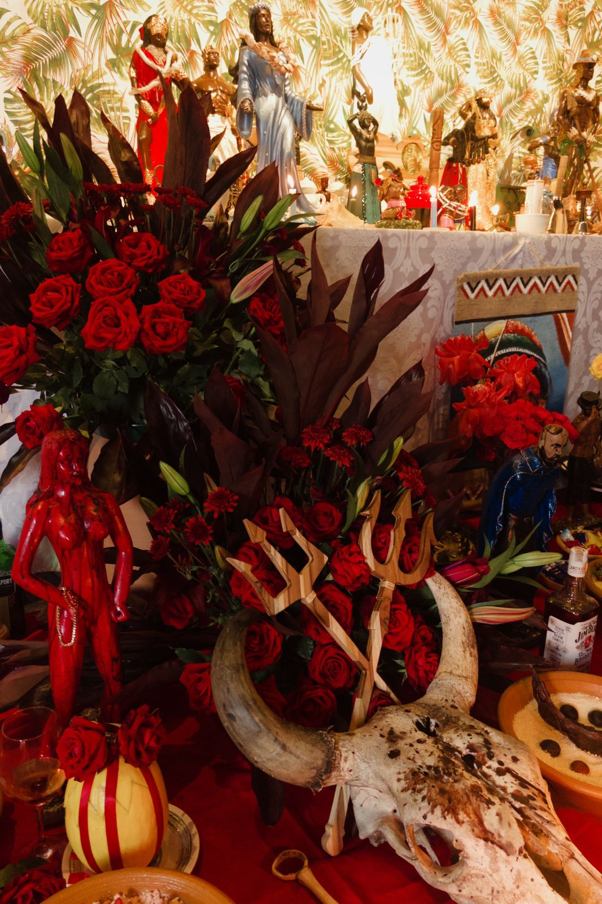

Templo Escola Aruanda de Mata Virgem
Ensino • Trabalho • Fé
Ensino • Trabalho • Fé
Casa espiritual dedicada ao estudo e prática da Umbanda e da Jurema Sagrada. Realizamos trabalhos espirituais voltados à caridade, orientação espiritual, desenvolvimento mediúnico e fortalecimento da fé.
Nosso objetivo é acolher, orientar e ajudar aqueles que buscam equilíbrio espiritual e evolução através da prática e do conhecimento.




Email:
contato@matavirgem.org
WhatsApp:
Falar no WhatsApp